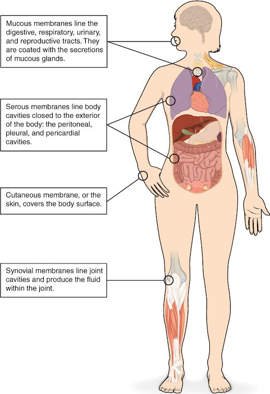

Body membranes and tissue repair
Tissue membranes are sheets that cover or line.
Part 1 · Clinical hook
Why this matters
Jamal, 24, slices his palm on a kitchen knife. The bleeding stops in a few minutes, but within the hour the skin around the cut is red, warm, swollen and sore. A week later new skin covers the gap, and a month later a thin pale line is all that remains. Each of those changes has a cause you can trace, starting with the sheet of tissue the knife went through.
Part 2 · Foundations
What this builds on
Part 3 · Prerequisite check
Quick check before you start
1. A serous membrane lines which kind of space?
- A tube that opens to the outside of the body
- A closed body cavity, such as the pleural cavity
- The space inside a single cell
Show the answer
Serous membranes (the pleura, pericardium and peritoneum) line closed body cavities. Their parietal and visceral layers slide on a thin film of serous fluid.
- A tube that opens to the outside of the body:
- Correct: A closed body cavity, such as the pleural cavity:
- The space inside a single cell:
2. Which connective tissue cell makes collagen fibers?
- Macrophage
- Fibroblast
- Adipocyte
Show the answer
Fibroblasts make the fibers and ground substance of connective tissue, including collagen. Macrophages engulf debris by phagocytosis, and adipocytes store fat.
- Macrophage:
- Correct: Fibroblast:
- Adipocyte:
3. What happens to a blood vessel's diameter and the blood flow through it during vasodilation?
- Diameter increases and flow increases
- Diameter decreases and flow increases
- Diameter increases and flow decreases
Show the answer
In vasodilation the smooth muscle in the vessel wall relaxes, the vessel widens, and resistance falls, so more blood flows through it.
- Correct: Diameter increases and flow increases:
- Diameter decreases and flow increases:
- Diameter increases and flow decreases:
Part 4 · Anatomy panel
Anatomy

With labels hidden, select a box to reveal its label.
Part 5 · Causal chain
How it works, step by step
- A cut breaks blood vessels and kills some cells by necrosis.A blood clot stops the bleeding, and damaged cells and mast cells release histamine and other chemical messengers.
- Histamine acts on nearby small arteries, capillaries and the smallest veins.The small arteries dilate and the small vessels become leaky, so the area turns red, warm and swollen. White blood cells stick to the walls of the smallest veins and crawl out into the tissue.
- Macrophages among those white blood cells engulf dead cells and debris by phagocytosis.The cleared space fills with new capillaries and dividing fibroblasts.
- With the gap cleared and supplied with capillaries, surviving working cells beside it divide, if they are a type that can.Where the framework survived, the new cells regenerate the tissue and its function returns.
- Where the working cells cannot divide, or the gap is too large for them to fill, the fibroblasts keep laying down collagen.The collagen becomes scar tissue (fibrosis), which holds the tissue together but does not do the lost cells' work.
Part 6 · Core concept
Core concepts
Part 7 · Misconception
A common mistake
The wrong idea: Once a wound has healed, the tissue is back to normal.
What actually happens: Healing ends in either regeneration or fibrosis. Only regeneration restores the original working cells. Fibrosis fills the gap with collagen, and scar tissue does not do the lost cells' job: a scar in heart muscle cannot contract, and a scar in the liver does not do liver work. Whether a tissue regenerates depends mainly on whether its working cells can divide and whether its framework survives.
Part 8 · Retrieval check
Check yourself
Anything you miss goes into your review queue.
1. A biopsy comes from the lining of a tube that opens to the outside of the body. It shows simple columnar epithelium with goblet cells, resting on loose connective tissue full of capillaries and white blood cells. Which membrane is this?
- A serous membrane
- The cutaneous membrane
- A synovial membrane
- A mucous membrane
Show the answer
A lining of a tract open to the outside, with epithelium over a lamina propria of loose connective tissue, is a mucous membrane (mucosa). The goblet cells keep it coated with mucus.
- A serous membrane: A serous membrane lines a closed cavity and has simple squamous epithelium, not columnar epithelium with goblet cells.
- The cutaneous membrane: The cutaneous membrane is the skin, whose surface is keratinized stratified squamous epithelium.
- A synovial membrane: A synovial membrane has no epithelium and lines the space inside a movable joint.
- Correct: A mucous membrane: Correct. Epithelium plus lamina propria, lining a tube open to the outside, is a mucosa.
2. An hour after a bee sting, the skin around it is puffy. Which change directly causes the puffiness?
- Vasoconstriction of the small arteries nearby
- Fibroblasts laying down collagen at the site
- Leakier small vessels letting fluid out into the tissue
- Mast cells dividing rapidly at the site
Show the answer
Histamine opens gaps between the endothelial cells of capillaries and the smallest veins. Water and proteins from plasma leak into the interstitial fluid, and the tissue swells.
- Vasoconstriction of the small arteries nearby: Inflammation causes vasodilation, not vasoconstriction. Narrower arteries would bring less blood and would not cause swelling.
- Fibroblasts laying down collagen at the site: Collagen is laid down days later during repair. It does not explain swelling within an hour.
- Correct: Leakier small vessels letting fluid out into the tissue: Correct. Fluid leaking out of leaky vessels into the interstitial fluid is what makes the tissue swell.
- Mast cells dividing rapidly at the site: Mast cells release histamine within minutes; they do not multiply to cause swelling. The swelling comes from fluid, not extra cells.
3. Before a small skin injury, a person takes a drug that blocks the receptor proteins histamine binds to. It does not change how much histamine mast cells release. Predict each variable at the injury site, compared with the same injury without the drug.
| Variable | Change |
|---|---|
| Amount of histamine released by mast cells | — |
| Blood flow into the area | — |
| Swelling | — |
| Number of mast cells in the skin | — |
Show the answer
Histamine acts only by binding its receptor proteins on target cells. The drug leaves histamine release unchanged but blocks its effects, so there is less vasodilation and less leaking from small vessels: less redness, warmth and swelling.
- Amount of histamine released by mast cells: no change. The drug acts on the receptor proteins of the target cells, not on the mast cells, so release is unchanged.
- Blood flow into the area: down. With its receptor proteins blocked, histamine causes less vasodilation of the small arteries, so less blood flows in and the area is less red and warm.
- Swelling: down. Histamine can no longer make capillaries and the smallest veins as leaky, so less fluid leaks into the interstitial fluid.
- Number of mast cells in the skin: no change. The drug blocks histamine's receptor proteins. It does not change how many mast cells there are.
4. Mr. Adams, 66, had part of his heart muscle die when an artery feeding it was blocked. Months later, an ultrasound shows that part of the heart wall is thin and does not move when the rest of the heart beats. Which best explains this?
- Scar tissue has replaced the dead heart muscle
- The dead muscle regenerated but is still immature
- Inflammation is still going on in that part of the wall
- Apoptosis removed the cells without any repair
Show the answer
Cardiac muscle regenerates very little because its cells rarely divide. Fibroblasts filled the gap with collagen (fibrosis). Scar tissue holds the wall together but cannot contract, so that region stays still.
- Correct: Scar tissue has replaced the dead heart muscle: Correct. The muscle cells of the heart rarely divide, so the heart repairs by fibrosis, and scar tissue does not contract.
- The dead muscle regenerated but is still immature: Cardiac muscle regenerates very little. Months later, the region is scar, not immature muscle.
- Inflammation is still going on in that part of the wall: Inflammation after an injury like this settles within weeks. A thin, still wall months later reflects scar tissue.
- Apoptosis removed the cells without any repair: Cells that die from lost blood supply die by necrosis, not apoptosis, and the gap they leave is filled by repair.
5. In a tissue sample, a patch of cells has swollen, their plasma membranes have ruptured, and white blood cells crowd the area around them. How did these cells most likely die?
- Apoptosis
- Mitosis
- Regeneration
- Necrosis
Show the answer
Swelling, membrane rupture, many neighboring cells dying together, and inflammation around them are the marks of necrosis, cell death caused by injury.
- Apoptosis: In apoptosis the cell shrinks and breaks into sealed pieces, and no inflammation follows.
- Mitosis: Mitosis is cell division, not cell death.
- Regeneration: Regeneration replaces lost cells; it is not a way cells die.
- Correct: Necrosis: Correct. Swollen, ruptured cells with inflammation around them point to necrosis.
6. A child gets a shallow scrape on one knee and a deep, gaping cut on the other. Which injury is more likely to heal without a visible scar, and what makes the difference?
- The deep cut: it forms a larger clot
- The scrape: its framework survives
- Both heal alike: skin regenerates well
- Neither: skin injuries all heal by fibrosis
Show the answer
Epidermis regenerates well, but it needs an intact framework to rebuild the right shape. In a shallow scrape the deeper connective tissue survives, so stem cells regrow normal skin. In a deep cut the framework is destroyed and collagen fills the gap as scar tissue.
- The deep cut: it forms a larger clot: A bigger clot does not make regeneration more likely. The deep cut destroys the framework, so it is the one that scars.
- Correct: The scrape: its framework survives: Correct. Surviving framework plus dividing stem cells in the epidermis allows regeneration without a scar.
- Both heal alike: skin regenerates well: Both involve skin, but depth decides the outcome. The deep cut loses its framework and scars.
- Neither: skin injuries all heal by fibrosis: Shallow injuries of the epidermis regenerate without scarring. Fibrosis fills only deeper gaps.
7. A patient's knee is swollen. A needle drawn into the space inside the knee returns a large volume of thick, slippery fluid. Which membrane made this fluid, and what is it made of?
- A serous membrane made of simple squamous epithelium
- A mucous membrane made of epithelium and lamina propria
- A synovial membrane made of connective tissue
- The cutaneous membrane made of epidermis and dermis
Show the answer
The space inside a movable joint such as the knee is lined by a synovial membrane. It is a connective tissue membrane, and its lining cells release the thick, slippery joint fluid.
- A serous membrane made of simple squamous epithelium: Serous membranes line the closed body cavities, such as the pleural and peritoneal cavities, not joint spaces.
- A mucous membrane made of epithelium and lamina propria: Mucous membranes line tracts open to the outside of the body. The space inside the knee is sealed.
- Correct: A synovial membrane made of connective tissue: Correct. A synovial membrane, made of connective tissue, lines the joint and releases its fluid.
- The cutaneous membrane made of epidermis and dermis: The skin covers the knee from outside. It does not line the joint space or release joint fluid.
Part 9 · Summary
Summary
Tissue membranes are sheets that cover or line. Epithelial membranes pair an epithelium with connective tissue: the mucous membrane (mucosa, over a lamina propria) lines tracts open to the outside, the serous membrane lines closed cavities, and the cutaneous membrane is the dry, keratinized skin. The synovial membrane is a connective tissue membrane lining movable joints. Injury starts inflammation: histamine from mast cells dilates small arteries (redness, heat) and makes small vessels leaky (swelling), and chemical messengers cause pain. Macrophages clear the debris; then the tissue regenerates if its working cells (parenchyma) can divide and its framework survives, or fills with collagen as scar tissue (fibrosis) if not. Necrosis is injury-caused cell death that ruptures cells and triggers inflammation; apoptosis does neither.
Part 10 · Up next